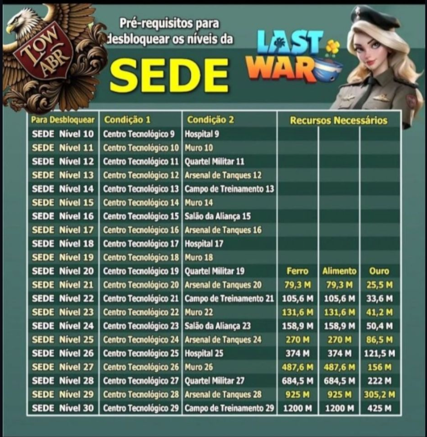

Guia da Aliança Vetra
Upar a sede significa aumentar o nível do Quartel-General (HQ) da sua base. Cada novo nível libera novas construções, melhorias, pesquisas e tropas mais fortes.
A sede funciona como o centro da sua base. Quanto maior o nível dela, mais avançado fica todo o seu progresso no jogo.
Melhorar a sede traz várias vantagens:
Muitos sistemas do jogo só liberam quando a sede chega em certos níveis, então quem não evolui a sede fica travado no progresso.
Para subir a sede de forma eficiente, o ideal é seguir o caminho mínimo de requisitos.
Normalmente você precisa melhorar:
O ideal é priorizar a sede sempre que possível, principalmente quando:
Durante o VS, subir a sede pode gerar muitos pontos, então muitos jogadores guardam recursos para upar a sede nesses dias.
Jogadores mais experientes costumam:
Assim eles conseguem evoluir a base e ainda ganhar muitos pontos para a aliança. 🏆

⬅ Voltar